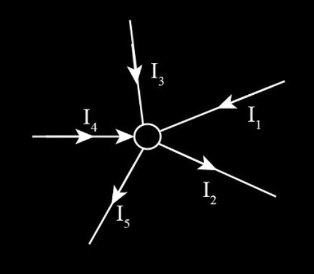
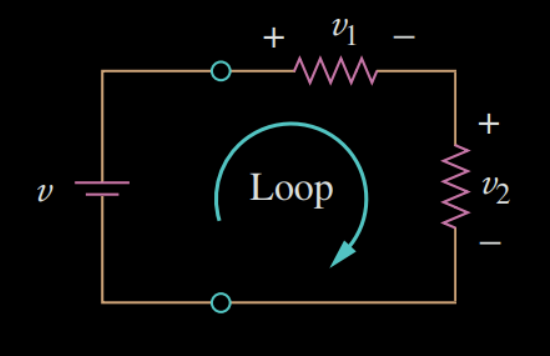
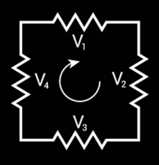

Kirchhoff’s Laws are two fundamental rules that describe how electrical current and voltage behave in circuits, formulated by the German physicist Gustav Kirchhoff in 1845.
Also known as Kirchhoff’s Current Law.
The algebraic sum of currents at a node is zero; which means that the total current entering a node equals the total current leaving it.
\(\Sigma i_{in} = \Sigma i_{out}\)
In this case, \(I_3 + I_4 + I_1 = I_5 + I_2\)
Also known as Kirchhoff’s Voltage Law.
The total voltage supplied in a closed loop is equal to the total voltage drop across all components within that loop. This law is a consequence of the principle of the conservation of energy.
\(\Sigma V=0\)
To apply this, we define a positive ( - → + ) and a negative ( + → - ) direction. Therefore, in this case:
\(-v + v_1 + v_2 = 0\)
Even without a battery, if it’s a closed loop part of a bigger circuit, this law still applies:
\(V_1 + V_2 + V_3 + V_4 = 0\)
Written by Sofia Osorio